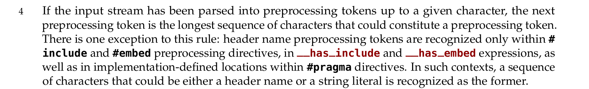
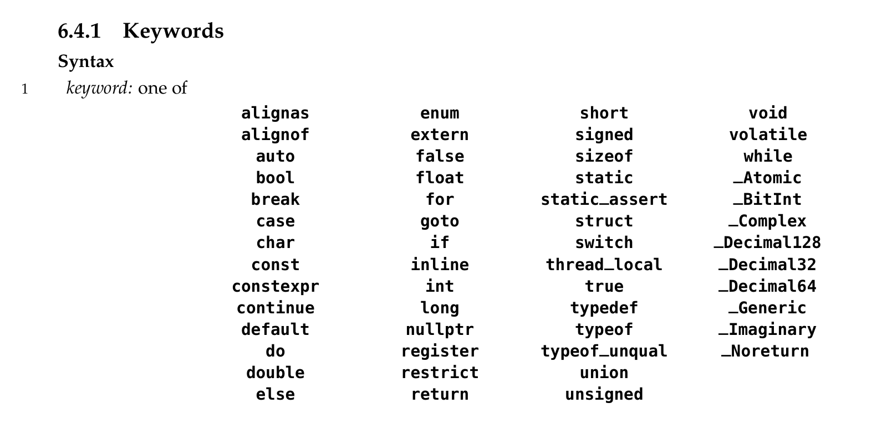
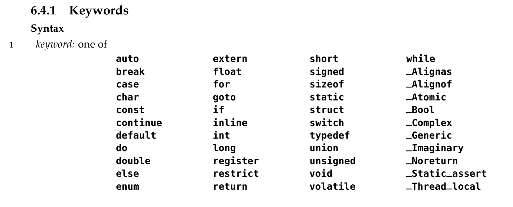
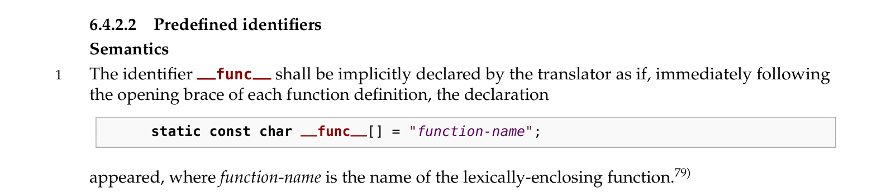
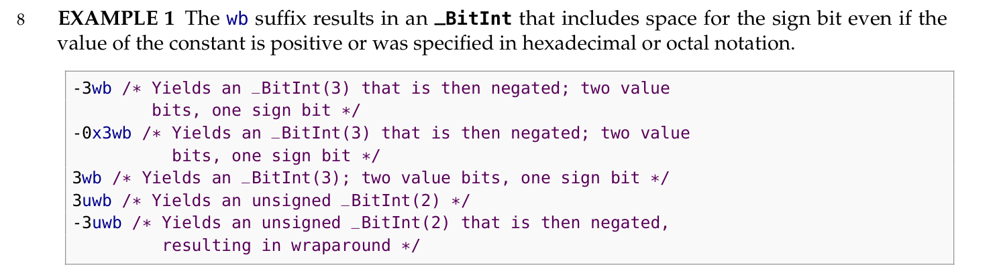
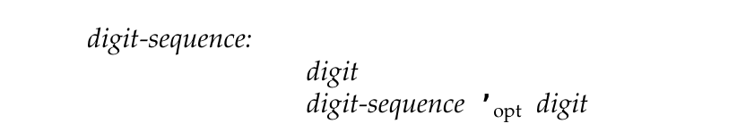
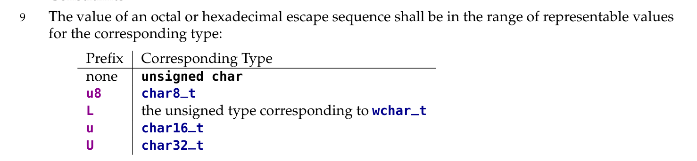
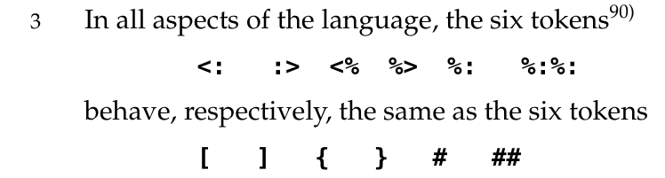

C23 标准手册拾遗（二）
Comment注意到 预处理器需要总是识别当前可识别的最长的词法单元。
比如 1Ex （科学记数法）它并不是 token 但是是 preprocessing token。它被识别为预处理数。即使 Ex 有宏定义且最终生成有效的表达式，比如
1 |
|
比如 x+++++y，被划分为 x++ ++ +y，即使这不符合语法；如果划分为 x++ + ++y 有可能语法上成立，但是词法划分并不鸟你。
注意到 现在这些全都是关键字了
回顾 C17 标准，是这样的：
主要变化大概是新增了 constexpr true false typeof typeof_unqual nullptr 这 6 个。剩下的就是改了改大小写。
首先是两个布尔常量宏定义进关键字了，以前需要 #include <stdbool.h>。另外现在有 nullptr。我打开编辑器看了一下 nullptr 不能跳转所以首先不是标识符了。值这块应该是 0 吧。。。
typeof 就是推导表达式的类型；typeof_unqual 应该是推导之后取消 qualifier 吧。这似乎早就是 gcc 的特性了。因为我看 kernel 早就有了
1 | /* linux/container_of.h */ |
注意到 标准内预定义的标识符只有一个
这一集应该还是很经典了。不过什么叫 lexically-enclosing？
注意到 _BitInt 字面量的后缀是 wb
_BitInt 字面量会自己寻找出路，按照无负号的部分以及有无符号给自己安一个最小的家。
注意到 在浮点字面量的数字序列当中可以插入单引号。
大概是作为一种分隔符，不太懂。
1 |
|
注意到 有不同宽度的字符类型
它们的字面量也有不同的写法。这里我就懒加载了。
注意到 digraphs
注意到 算数表达式的结果如果